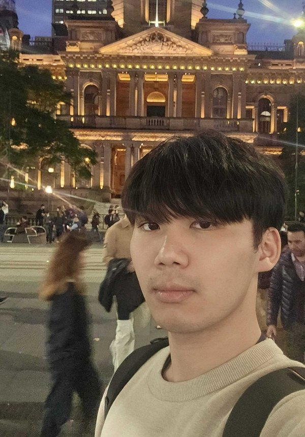

ICLR 2027, under review

Integrated M.S.–Ph.D. student at CVLAB, Kim Jaechul Graduate School of AI, KAIST, advised by Prof. Seungryong Kim.
I study how intelligent systems perceive dynamic scenes and act within them. I started with multimodal video understanding and generation, and now work on vision-language-action models for autonomous driving and robot manipulation.
Next, I want to understand world models and action generation: how well perception, context modeling, and action generation inside a world model can capture the uncertainty of future dynamics.
ICLR 2027, under review
ICLR 2027, under review
ICLR 2027, under review
CVPR 2027, under review
ODI, PTA and VLM4RWD Workshops at NeurIPS 2026
Preliminary version of the ICLR 2027 submission on driving VLA pruning.
AdaptFM Workshop at ICML 2026
May 2026 – now
LG Innotek, industry–academia project at CVLAB, KAIST
Proposed an analysis-driven structured pruning method for reasoning driving VLAs (Alpamayo) that cuts memory and inference latency while preserving performance (ICLR 2027, under review).
Jan – Mar 2026
Maum AI, WORV Research Team
Researched vision-language-action models for robot manipulation that take long-context inputs, using input token compression for the underlying multimodal LLM.
Dec 2024 – Nov 2025
Samsung Electro-Mechanics, industry–academia project at CVLAB, KAIST
Combined segmentation and captioning models for visual inspection, and developed an interaction-aware referring video object segmentation method grounded in natural language (InterRVOS, CVPR 2026).